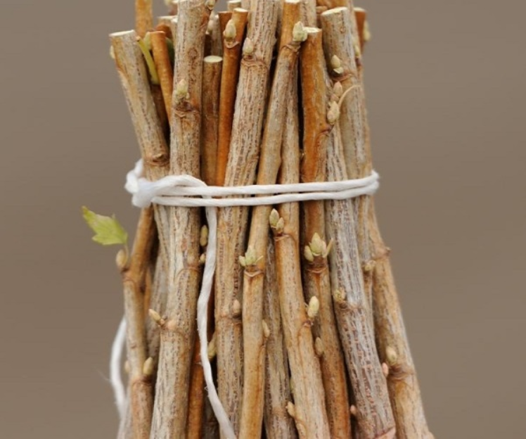
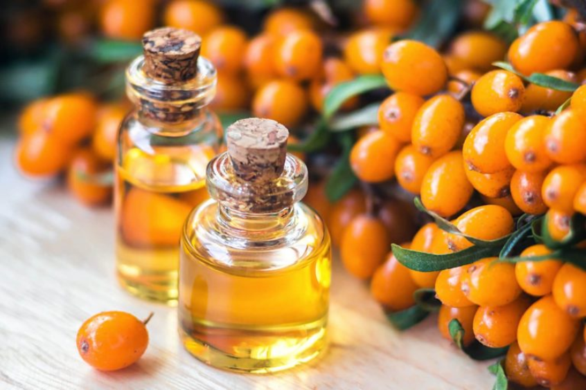
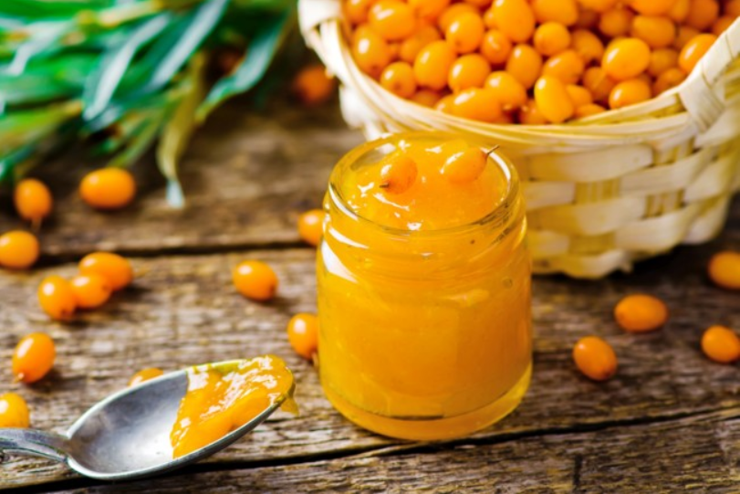

Sea buckthorn usually grows in the form of a bush 0.5 - 4 m tall. The root system is slightly muscular, superficial. The roots are long, threadlike, often give shoots-shoots, have glomeruli (so-called root cones), in which nitrogen-fixing bacteria settle. Her crown is spreading, but often sparse. The branches are long, spiny, densely flattened. Young shoots with small spherical buds, covered with silver scales. The plant is dioecious, that is, unisexual male and female flowers develop in it on different individuals. Male flowers are gathered in short, almost spherical inflorescences, spikelets on very short peduncles. Staminate flowers brownish, small with deeply divided perianth and four stamens, without petals. The uterine flowers are greenish, inconspicuous, with a tubular two-lobed perianth, sitting in the axils of the leaves. One patch, ovary upper. The fruit is an oval drupe (7-8 mm in length), juicy, smooth, shiny, yellowish or orange-red ball-shaped with a peculiar taste and aroma. The fruits sit densely, as if sticking a stem. Seeds (up to 5 mm in length) are black, shiny with a stream.
Well propagated by cuttings. To do this, cut them 40 cm in length at the beginning of the growing season. In the dug stream (width - 10, depth - 30 cm) covered with a mixture of river sand and humus soil (1: 1), cuttings are buried at a distance of 3 cm from each other, leaving on top two buds (in the first years of the sea buckthorn gives a root root and grows slightly). The upper cut of the cuttings is greased with garden lime. For better rooting, cuttings are shaded and often watered. You can also propagate sea buckthorn seeds and seedlings. To store in the offspring of economically valuable traits and properties use a vegetative method of reproduction.
Sea buckthorn fruits are a valuable multivitamin raw material. Sea buckthorn oil, obtained from fruits, acts as an epithelial, granulating and analgesic, it is used in gynecological practice, for the treatment of burns, frostbite, eczema, badly healed external ulcers, gastric ulcer and duodenal ulcer, esophagus in radiation therapy for cancer.Sea buckthorn fruits are a valuable medicinal and dietary product. Sea buckthorn oil, which is produced from fruits and seeds, is used in radiation skin lesions, as a bactericidal agent it is used in many infectious diseases, gynecological practice, ulcers of the stomach and duodenum.Oil is also treated with eczema, some eye diseases. Juice and fruits are used for hypovitaminosis, in particular for scurvy; fruits with leaves - for the treatment of rheumatism and diseases of the stomach; seeds - as a good laxative. Also effective is the use of oil for erosive-ulcerative proctitis, erosive-ulcerative sphincteritis, anus cracks, catarrhal and atrophic proctitis, internal hemorrhoids in patients with chronic enterocolitis. Sea buckthorn oil is used in sinusitis, in the postoperative period after tonsillectomy, in chronic tonsillitis, in the treatment of pulpitis and periodontitis. Sea buckthorn oil is a part of the combined aerosol preparation "Oleazol", which also includes levomitsetin, anesthesin, boric acid and fillers. The drug is used as a means of accelerating wound healing, burns, infected wounds, trophic ulcers, eczema and itchy dermatoses.Sea buckthorn is used in cosmetics, with its oils prepare nutritional masks that accelerate epithelialization and generation of skin tissues, decoction of fruits and branches used in hair loss and hair loss.
 